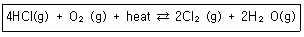
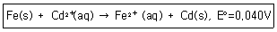
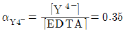
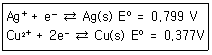
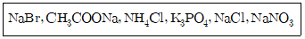
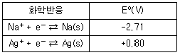
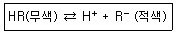
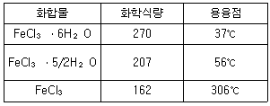

화학분석기사(구) (2014-09-20 기출문제)
1과목: 일반화학
1. 산화환원반응에서 전자를 받아들이는 화학종을 무엇이라고 하는가?
- 산화제
- 환원제
- 촉매제
- 용해제
(정답률: 86%)

2. 주기율표에서의 일반적인 경량으로 옳은 것은?
- 원자 반지름은 같은 족에서는 위로 올라갈수록 증가한다.
- 원자 반지름은 같은 주기에서는 오른쪽으로 갈수록 감소한다.
- 같은 주기에서는 오른쪽으로 갈수록 금속성은 증가한다.
- 0 족에서는 금속성 물질만 존재한다.
(정답률: 89%)
3. 소금이나 설탕 등과 같은 고체화합물을 용액 속에서 용해할 때, 그 용해 속도를 증가시킬 수 있는 요인은?
- 용액의 교반과 냉각
- 용액의 가열과 교반
- 용액의 제거와 냉각
- 용액의 냉각과 고체 용질의 분쇄
(정답률: 87%)
4. C4H8의 모든 이성질체의 개수는 몇 개인가?
- 4
- 5
- 6
- 7
(정답률: 58%)
5. 어떤 반응의 평형상수를 알아도 예측할 수 없는 것은?
- 평형에 도달하는 시간
- 어떤 농도가 평형조건을 나타내는지 여부
- 주어진 초기농도로부터 도달할 수 있는 평형의 위치
- 반응의 진행 정도
(정답률: 83%)
6. 다음 아보가드로 수와 관련된 설명 중 틀린 것은?
- 수소 기체 1g 중의 수소 원자 수
- 물 18g 중의 물 분자 수
- 표준 상태의 수소 기체 22.4L 중의 수소 분자 수
- 표준 상태의 암모니아 기체 5.6L 중의 수소 원자 수
(정답률: 73%)
7. 물 90.0g에 포도당(C6H12O6) 4.80g이 녹아 있는 용액에서 포도당의 몰랄농도를 구하면?
- 0.0296m
- 0.296m
- 2.96m
- 29.6m
(정답률: 80%)
8. C, H, O로 이루어진 화합물이 있다. 이 화합물 1.543g을 완전연소시켰더니 CO2 2.952ㅎ, H2O 1.812g이 생겼다. 이 화합물의 실험식에 해당하는 것은?
- CH3O
- CH5O
- C2H5O
- C2H6O
(정답률: 57%)
9. 중성의 염소(Cl) 원자는 17번지의 원자 번호를 가지며 37의 질량수를 가진다. 중성 염소 원자의 양성자, 중성자, 전자의 개수를 옳게 나열한 것은?
- 양성자:37, 중성자:0, 전자:37
- 양성자:17, 중성자:0, 전자:17
- 양성자:17, 중성자:20, 전자:37
- 양성자:17, 중성자:20, 전자:17
(정답률: 85%)
10. 물질의 구성에 관한 설명 중 틀린 것은?
- 몰(mole) 질량의 단위는 g/mol이다.
- 아보가드로 수는 수소 12.0g 속의 수소 원자의 수에 해당한다.
- 몰(mole)은 아보가드로 수만큼의 입자들로 구성된 물질의 양을 의미한다.
- 분자식은 분자를 구성하는 원자의 종류와 수를 원소 기호를 사용하여 나타낸 화학식이다.
(정답률: 87%)
11. 다음과 같은 가역반응이 일어난다고 가정할 때 평형을 오른쪽으로 이동시킬 수 있는 변화는?

- Cl2의 농도 증가
- HCl의 농도 감소
- 반응온도 감소
- 압력의 증가
(정답률: 84%)
12. 다음 중 가장 큰 2차 이온화 에너지를 가지는 것은?
- Mg
- Cl
- S
- Na
(정답률: 57%)
13. [Fe2+]=0.02M이고 [Cd2+]=0.20M일 때 298K에서 다음 산화-환원 반응의 전지전위(V)는 약 얼마인가?

- +0.099
- +0.069
- +0.039
- +0.011
(정답률: 66%)
14. 수용액에서 약간 용해하는 이온화합물 Ag2CO3(s)의 용해도곱 평형상수(Ksp)식이 맞는 것은?
- Ksp[Ag+]2[CO32-]
- Ksp=[Ag2+][CO3-]
- Ksp=2[Ag+]2[CO32-]/[Ag2CO3]
- Ksp=[Ag2+][CO3-]/[Ag2CO3]
(정답률: 77%)
15. 산과 염기의 정의에 대한 설명 중 틀린 것은?
- 아레니우스 염기는 물에서 해리하여 수산화이온을 내놓는 물질이다.
- 브뢴스태드-로우리 산은 수소이온 주개로 정의한다.
- 브뢴스태드-로우리 염기는 양성자 주개로 정의한다.
- 아레니우스 산은 물에서 이온화되어 수소이온을 생성하는 물질이다.
(정답률: 79%)
16. O2-, F, F-를 지름이 작은 것부터 큰 순서로 옳게 나열한 것은?
- O2-＜F＜F-
- F＜F-＜O2-
- O2-＜F-＜F
- F-＜O2-＜F
(정답률: 82%)
17. sp3 혼성귀도함수가 참여한 결합을 가진 물질은?
- C6H6
- C2H2
- CH4
- C2H4
(정답률: 75%)
18. 0.195M H2SO4 용액 15.5L를 만들기 위해 18.0M H2SO4용액 얼마를 물로 희석시켜야 하는가?
- 0.336mL
- 92.3mL
- 168mL
- 226mL
(정답률: 84%)
19. 수소이온의 농도가 1.0×10-7M 용액의 pH는?
- 6.00
- 7.00
- 8.00
- 9.00
(정답률: 87%)
20. 몰랄농도가 3.24m인 K2SO4 수용액 내 K2SO4의 몰분율은? (단, 원자량은 K가. 39.10, 0는 16.00, H는 1.008, S는 32.06이다.)
- 0.36
- 0.036
- 0.551
- 0.⑤5
(정답률: 63%)
2과목: 분석화학
21. 어떤 유기산 10.0g을 녹여 100mL 용액을 만들면, 이 용액에서의 유기산의 해리도는 2.50%이다. 유기산은 일양성자산이며, 유기산의 Ka가 5.00×10-4 이었다면, 유기산의 화학식량은?
- 6.40g/mol
- 12.8g/mol
- 64.0g/mol
- 128g/mol
(정답률: 55%)
22. 과망간산칼륨 5.00g을 물에 녹이고 500mL로 묽혀 과망간산칼륨 용액을 준비하였다. Fe2O3를 24.5% 포함하는 광석 0.500g 속에 든 철은 몇 mL의 KMnO4용액과 반응하는가? (단, KMnO4의 분자량은 158.04g/mol, Fe2O3의 분자량은 159.69g/mol이다.)
- 2.43
- 4.86
- 12.2
- 24.3
(정답률: 34%)
23. 0.10M 황산 용액 1L를 제조하는데 94%(wt/wt), 밀도 1.831g/mL인 진한 황산 몇 mL를 물과 섞어 희석시켜야 하는가?
- 0.0⑤7
- 0.⑤7
- 0.57
- 5.7
(정답률: 50%)
24. 40.00mL의 0.1000M I-를 0.2000M Pb2+로 적정하고자 한다. Pb2+를 5.00mL 첨가하였을 때, 이 용액 속에서 I-의 농도는 몇 M인가? (단, PbI2(s)⇄Pb2+(aq)+2I-(aq), Ksp=7.9×10-9이다.)
- 0.0444
- 0.⑤00
- 0.0667
- 0.1000
(정답률: 54%)
25. 물(H2O)에 관한 일반적인 설명으로 맞는 것은?
- 물의 pH가 낮으면 염기성을 나타낸다.
- 물의 pH가 낮으면, [H+]가. [OH-]보다 적게 존재한다.
- 물 속에서 H+는 H3O+로 존재한다.
- 물은 섭씨 4도에서 가장 가볍다.
(정답률: 85%)
26. pH 10으로 완충된 0.1M Ca2+ 용액 20mL를 0.1M EDTA로 적정하고자 한다. 당량점(VEDTA=20mL)에서의 Ca2+ 몰농도(mol/L)는 얼마인가? (단, CaY2-의 K1=5.0×1010이고 Y4-로 존재하는 EDTA분율

이다.)- 1.7×10-4M
- 1.7×10-5M
- 1.7×10-6M
- 1.7×10-7M
(정답률: 37%)
27. 전하를 띠지 않는 중성분자들은 이온세기가 0.1M 보다 작을 경우 활동도 계수(actovoty coefficient)를 얼마라고 할 수 있는가?
- 0
- 0.1
- 0.5
- 1
(정답률: 81%)
28. 고체에 포함된 Cl-의 양을 측정하기 위하여 고체 시료 5g을 용해시킨 후 과량의 질산은으로 처리하여 AgCl 침전물을 얻었다. 침전물 AgCl을 세척, 건조 과정을 거쳐 무게를 측정하니 0.261g이었다. 고체 시료 내에 포함된 Cl-의 무게 백분율은 얼마인가? (단, AgCl의 분자량은 143.32g/mol이고 Cl의 원자량은 35.453g/mol이다.)
- 1.29%
- 5.22%
- 12.9%
- 15.2%
(정답률: 57%)
29. Cu(s)+2Ag+⇄Cu2++2Ag(s) 반응의 평형상수값은 약 얼마인가? (단, 이들 반응을 구성하는 한쪽반응과 표준전극전위는 다음과 같다.)(오류 신고가 접수된 문제입니다. 반드시 정답과 해설을 확인하시기 바랍니다.)

- 2.5×1012
- 4.1×1015
- 4.1×1018
- 2.5×1010
(정답률: 41%)
30. 다음 염(salt)들 중에서 물에 녹았을 때, 염기성 수용액을 만드는 염을 모두 나타낸 것은?

- CH3COONa, K3PO4
- CH3COONa
- NaBr, CH3COONa, NH4Cl
- NH4Cl, K3PO4, NaCl, NaNO3
(정답률: 70%)
31. [표]의 표준 환원 전위를 참고할 때 다음 중 가장 강한 산화제는?

- Na+
- Ag+
- Na(s)
- Ag(s)
(정답률: 83%)
32. 산-염기 적정에서 사용하는 지시약이 용액 속에서 다음과 같이 해리한다고 한다. 만일 이 용액에 산을 첨가하여 용액의 액성을 산성이 되게 했다면 용액의 색깔은 어느 쪽으로 변화하는가?

- 적색
- 무색
- 적색과 무색이 번갈아 나타난다.
- 알 수 없다.
(정답률: 73%)
33. 과산화수소 50wt% 수용액의 밀도가 1.18g/mL 라면 과산화수소수의 몰 농도는 약 몇 M인가?
- 1.74
- 2.88
- 17.3
- 28.8
(정답률: 63%)
34. 갈바니 전지를 선 표시법으로 옳게 나타낸 것은?
- Cd(d) ║CdCl2(aq)|AgNO3(aq)║Ag(s)
- Cd(s)|CdCl2(aq)║AgNO3(aq)|Ag(s)
- Cd(s), CdCl2(sq), AgNO3(aq), Ag(s)
- Cd(s), CdCl2(ap)|AgNO3(aq), Ag(s)
(정답률: 83%)
35. pH 10.00인 10.00mL의 0.0200M Ca2+를 0.0400M EDTA로 적정하고자 한다. 7.00mL EDTA가 첨가되었을 때 Ca2+의 농도는 약 얼마인가? (단, Ca2++EDTA⇄CaY2-, K1=1.8×1010이다.)
- 1.40×10-10M
- 5.6×10-11M
- 7.4×10-13M
- 0.0200M
(정답률: 39%)
36. 1.000 Lㆍatmㆍmol-1ㆍK-1을 Jㆍmol-1ㆍK-1로 환산하면 얼마인가?
- 1.013
- 10.13
- 101.3
- 1013
(정답률: 64%)
37. 다음 중 화학평형에 대한 설명으로 옳은 것은?
- 화학평형상수는 단위가 없으며, 보통 K로 표시하고 K가 1보다 크면 정반응이 유리하다고 정의하며, 이 때 Gibbs 자유에너지는 양의 값을 가진다.
- 평형상수는 표준상태에서의 물질의 평형을 나타내는 값으로 항상 양의 값이며, 온도에 관계없이 일정하다.
- 평형상수의 크기는 반응속도와는 상관이 없다. 즉 평형상수가 크다고 해서 반응이 빠름을 뜻하지 않는다.
- 물질의 용해도곱(solubility product)은 고체염이 용액내에서 녹아 성분 이온으로 나뉘는 반응에 대한 평형상수로 흡열반응은 용해도곱이 작고, 발열반응은 용해도 곱이 크다.
(정답률: 74%)
38. 갈바니 전지(galvanic cell)의 염다리에 관한 설명 중 틀린 것은?
- 염다리는 KCl, KNO3, NH4Cl과 같은 염으로 채워져 있다.
- 염다리를 통하여 갈바니 전지는 전체적으로 전기적 중성이 유지된다.
- 염다리의 염용액 농도는 매우 낮다.
- 염다리에는 다공성 마개가 있어 서로 다른 두 용액이 서로 섞이는 것을 방지한다.
(정답률: 74%)
39. 부피적정에서 사용되는 이상적인 표준용액의 요건이 아닌 것은?
- 용액농도가 쉽게 변하지 않는 안정된 물질이여야 한다.
- 분석하고자 하는 물질과 빠르게 반응하여야 한다.
- 분석 시료 내의 모든 물질과 요이하게 반응하여야 한다.
- 분석하고자 하는 물질과 반응하여 반응이 완결되어야 한다.
(정답률: 72%)
40. HCl 용액을 표준화하기 위해 사용한 Na2CO3가 완전히 건조되지 않아서 물이 포함되어 있다면 이것을 사용하여 제조된 CHl 표준용액의 농도는?
- 참값보다 높아진다.
- 참값보다 낮아진다.
- 참값과 같아진다.
- 참값의 1/2이 된다.
(정답률: 79%)
3과목: 기기분석I
41. 푸리에(Fourier) 변환을 이용하는 분광법에 대한 설명으로 틀린 것은?
- 기기들이 복사선의 세기를 감소시키기는 광학부분장치와 슬릿을 거의 가지고 있지 않기 때문에 검출기에 도달하는 복사선의 세기는 분산기기에서 오는 것보다 더 크게 되므로 신호-대-잡음비가 더 커진다.
- 높은 분해능과 파장 재현성으로 인해 매우 많은 좁은 선들의 겹침으로 해서 개개의 스펙트럼의 특성을 결절하기 어려운 복잡한 스펙트럼을 분석할 수 있게 한다.
- 광원에서 나오는 모든 성분 파장들이 검출기에 동시에 도달하기 때문에 전체 스펙트럼을 짧은 시간 내에 얻을 수 있다.
- 푸리에 변환에 사용되는 간섭계는 미광의 영향을 받으므로 시간에 따른 미광의 영향을 최소화하기 위하여 빠른 감응검출기를 사용한다.
(정답률: 73%)
42. 어떤 물질의 물흡광계수는 440nm에서 34000M-1cm-1이다. 0.2cm셀에 들어 있는 1.03×10-4M 용액의 퍼센트 투광도 는 약 얼마인가?
- 15%
- 20%
- 25%
- 30%
(정답률: 64%)
43. X-선 분광법은 특정 파장의 X-선 복사선을 방출, 흡수, 회절에 이용하는 방법이다. X-선 분광법 중 결정물질 중의 원자배열과 원자간 거리에 대한 정보를 제공하며, 스테로이드, 비타민, 항생물질과 같은 복잡한 물질구조의 연구, 결정질 화합물의 확인에 주로 응용되고 있는 방법은?
- X-선 형광분광법
- X-선 흡수분광법
- X-선 회절분광법
- X-선 방출분광법
(정답률: 68%)
44. 양성자 NMR 분광법에서 표준물질로 사용되는 사메틸실란(TMS, Tetramethyl silane)에 대한 설명으로 틀린 것은?
- TMS의 가리움 상수가 대부분의 양성자보다 크다.
- TMS에 존재하는 수소는 한 종류이다.
- TMS에 존재하는 모든 양성자는 같은 화학적 이동 값을 갖는다.
- TMS는 휘발성이 적다.
(정답률: 59%)
45. X-선 형광법의 장점이 아닌 것은?
- 스펙트럼이 단순하여 방해효과가 적다.
- 비파괴 분석법이다.
- 감도가 다른 분광법보다 아주 우수하다.
- 실험 과정이 빠르고 간편하다.
(정답률: 68%)
46. 전자기 복사선의 파장이 긴 것부터 짧아지는 순서대로 옳게 나열된 것은?
- 라디오파＞적외선＞가시선＞자외선＞X선＞마이크로파
- 라디오파＞적외선＞가시선＞자외선＞마이크로파＞X선
- 마이크로파＞적외선＞가시선＞자외선＞라디오파＞X선
- 라디오파＞마이크로파＞적외선＞가시선＞자외선＞X선
(정답률: 75%)
47. Beer의 법칙에 대한 설명으로 옳은 것은?
- 흡광도는 색깔 세기의 척도가 된다.
- 몰흡광계수는 특정파장에서 통과한 빛의 양을 의미한다.
- 농도가 2배로 증가하면 흡광도는 1/4 로 감소한다.
- 흡광도는 시료의 농도와 통로 길이의 단위를 묶어서 % 단위로 표시한다.
(정답률: 60%)
48. 발광다이오드(LED, Light Emitting Diode)를 적당히 가공하면 반도체 레이저를 제조할 수 있다. 반도체 레이저는 대부분 적외선 영역의 파장을 갖기 때문에 분광학적 응용에는 매우 제한적이다. 따라서 진동수 배가장치를 이용하면 청색, 녹색 등의 파장을 낼 수가 있다. 다음 중 진동 수 배가 장치는?
- 비선형 결정(Nonlinear Crystal)
- 에셀레 단색화기(Echelle Monochromator)
- 광전 증배관(Photomultiplier Tube)
- 색소 레이저(Dye Laser)
(정답률: 35%)
49. 자외선-가시선(UV-Vis) 흡수분광법의 광원의 종류에 해당되지 않는 것은?
- 중수소 및 수소등
- 텅스텐 필라멘트등
- 속빈 음극등
- 제논(Xe) 아크등
(정답률: 70%)
50. 다음 양자전이 중 가장 큰 에너지가 필요한 것은?
- 분자 회전
- 자기장 내에서 헥스판
- 내부 전다
- 결합 전다
(정답률: 74%)
51. 안쪽 궤도함수의 전자가 여기상태로 전이할 때 흡수하는 복사선은?
- 초단파
- 적외선
- 자외선
- X-선
(정답률: 70%)
52. 적외선 흡수 분광법에 사용하는 액체용 시료 용기가 비어 있는 상태에서 1200cm-1~1400cm-1의 구간에서 4개의 간섭봉우리를 나타내었다. 시료 용기의 광로 길이(path length)는 얼마인가?
- 10μm
- 50μm
- 100μm
- 200μm
(정답률: 42%)
53. 원자분광학에서 사용되는 플라즈마 분석기술과 가장 거리가 먼 것은?
- Inductively Coupled Plasma(ICP)
- Direct Current Plasma(DCP)
- Microwave Induced Plasma(MIP)
- Chemical Ionization Plasma(CIP)
(정답률: 67%)
54. 산 무수물(Acid Anhydride)에 대한 적외선 흡수분광 스펙트럼에 대한 설명으로 옳은 것은?
- 하나의 큰 C=0 흡수띠가 있다.
- 대칭, 비대칭의 흡수띠가 있다.
- C-H 굽힘 흡수띠는 3,000cm-1 정도에서 발견된다.
- C-0신축 흡수띠는 C=0 흡수띠와 유사 위치에 발견된다.
(정답률: 52%)
55. 이산화탄소 분자는 모두 몇 개의 기준 진동방식을 가지는가?
- 3
- 4
- 5
- 6
(정답률: 81%)
56. 불꽃원자장치에서 필요한 구성요소가 아닌 것은?
- 연료
- 전기로
- 산화제
- 버너
(정답률: 56%)
57. 분석기기를 사용하여 물질을 정량할 때, 적당한 기기분석의 검정법이 아닌 것은?
- 표준용액법
- 표준물첨가법
- 내부표준물법
- 표준검정곡선법
(정답률: 70%)
58. 발색단에 대한 설명으로 옳은 것은?
- 특징적인 전이에너지나 흡수파장에 대해 흡광을 하는 원자단을 말한다.
- 특징적인 전이에너지를 흡광하지 않지만 인접한 작용기의 흡광세기와 파장에 변화를 주는 치환기이다.
- 메틸(Methyl) 그룹은 전형적인 발색단이다.
- 흡광파장과 관계없는 치환기를 말한다.
(정답률: 66%)
59. 원자흡수법에서 사용되는 광원에 대한 설명으로 틀린 것은?
- 다양한 원소를 하나의 광원으로 분석이 가능하다.
- 흡수선 나비가 좁기 때문에 분자흡수에서는 볼 수 없는 측정상의 문제가 발생할 수 있다.
- 원자 흡수봉우리의 제한된 나비 때문에 생기는 문제는 흡수봉우리보다 저 좁은 띠나비를 갖는 선광원을 사용함으로써 해경할 수 있다.
- 원자흡수선이 좁고, 전자전이 네어지가 각 원소마다 독특하기 때문에 높은 선택성을 갖는다.
(정답률: 63%)
60. 다음 중 형광을 발생하는 화합물은?
- Pyridine
- furan
- pyrrole
- quinoline
(정답률: 72%)
4과목: 기기분석II
61. 역상(reverse Phase) 액체크로마토그래피에서 용질의 극성이 A＞B＞C 순으로 감소할 때, 용질의 용출 순서를 빠른 것부터 바르게 나열한 것은?
- A-B-C
- C-B-A
- A-C-B
- B-C-A
(정답률: 78%)
62. 머무름 시간이 630초인 용질의 봉우리 너비를 변곡점을 지나는 접선과 바탕선이 만나는 지점에서 측정해 보니 12초 이었다. 다음의 봉우리는 652초에 용리되었고 너비는 16초 이었다. 두 성분의 분리도는?
- 0.19
- 0.36
- 0.79
- 1.57
(정답률: 56%)
63. 다음 질량분석법 중 시료의 분자량 측정에 이용하기에 가장 부적당한 이온화 방법은?
- 빠른원자충격법(FAB)
- 전자충격이온화법(EI)
- 장탕착법(FD)
- 장이온화법(FI)
(정답률: 65%)
64. 포화칼로멜 전극의 반쪽 전지를 옳게 표현한 것은?
- Hg(I)|HgCl2(sat'd), KCl(aq)║
- Hg(s)|HgCl2(sat'd), KCl(aq)|
- Hg(s)|KCl(sat'd), Hg2+(aq)║
- Hg(I)|Hg2Cl2(sat'd), KCl(aq)║
(정답률: 57%)
65. HETP가 50μm인 컬럼의 이론단수가 6500이면 이 컬럼의 최소길이는 얼마인가?
- 32.5cm
- 3.25m
- 13.0cm
- 13m
(정답률: 53%)
66. 다음 중 질량분석기로 사용되지 않는 것은?
- 단일 극자 질량분석기
- 이중 초점 질량분석기
- 이온 포착 질량분석기
- 비행-시간 질량분석기
(정답률: 58%)
67. 플라로그래피법으로 수용액 중의 금속 양이온을 분석하고자 한다. 가장 적합한 작업전극은?
- 적하 수은전극
- 매달린 수은전극
- 백금흑 전극
- 유기질탄소 전극
(정답률: 80%)
68. 전압-전류법의 전압전류고선으로부터 얻을 수 있는 정보가 아닌 것은?
- 정량 및 정성분석
- 전극반응의 가역성
- 금속착물의 안정도상수 및 배위수
- 전류밀도
(정답률: 46%)
69. 얇은 층 크로마토그래피(TLC)에서 시료 전개 시점부터 전개 용매가 이동한 거리가 7cm, 용질 A가 이동한 거리가 4.5cm라면 지연인자(RF) 값은 얼마인가?
- 0.56
- 0.64
- 1.6
- 2.5
(정답률: 75%)
70. 질량분석법에서 기체상태 이온화법이 아닌 것은?
- 장이온화법
- 화학적이온화법
- 전자충격이온화법
- 빠른원자충격이온화법
(정답률: 47%)
71. 용액의 비전기전도도(Specific electric conductivity)에 대한 설명 중 틀린 것은?
- 용액의 비전기전도도는 이동도에 비례한다.
- 용액의 비전기전도도는 농도에 비례한다.
- 용액 중의 이온의 비전기전도도는 하전수에 반비례한다.
- 수용액의 비전기전도도는 0.10M KCl용액을 써서 용기상수(Cell constant)를 구해 두면, 측정 전도도값으로부터 계산할 수 있다.
(정답률: 61%)
72. 이온 크로마토그래피에 대한 설명으로 틀린 것은?
- 양이온교환 수지에 교환되는 양이온의 교환반응상수는 그 전하와 수화된 이온 크기에 영향을 받는다.
- 음이온교환 수지에서 교환상수는 2가 음이온보다 1가 음이온이 더 적은 것이 일반적이다.
- 용리액 억제 컬럼은 용리 용매의 이온을 이온화가 억제된 분자화학종으로 변형시켜서 용리 전해질의 전기전도를 막아준다.
- 단일 컬럼 이온 크로마토그래피에서는 이온화 억제제를 컬럼에 정지상과 같이 넣어 이온을 분리한다.
(정답률: 65%)
73. 다음 표와 같은 열특성을 나타내는 FeCl3ㆍ6H2O 25.0mg을 0℃로부터 340℃까지 가열하였을 때 얻은 열분해 곡선(Thermogram)을 예측하였을 때, 100℃와 320℃에서 시료의 질량으로 가장 타당한 것은?

- 100℃-9.8mg, 320℃-0.0mg
- 100℃-12.6mg, 320℃-0.0mg
- 100℃-15.0mg, 320℃-15.0mg
- 100℃-20.2mg, 320℃-20.2mg
(정답률: 64%)
74. 기체크로마토그래피(GC)에서 정성분석에 이용되는 화합물의 머무름 지수(I, Retention index)가 옳은 것은?
- n-C2H6:200
- C3H5:250
- n-C4H10:300
- C4H8:350
(정답률: 52%)
75. 사중극자 질량분석관에서 좁은 띠 필터로 되는 경우는?
- 고질량 필터로 작용하는 경우
- 저질량 필터로 작용하는 경우
- 고질량과 저질량 필터가 동시에 작용하는 경우
- 고질량 필터를 먼저 작용시키고, 그다음 저질량 필터를 작용하는 경우
(정답률: 71%)
76. HPLC에서 GC에서의 온도 프로그래밍을 이용하여 얻은 효과와 유사한 효과를 얻을 수 있는 방법은?
- 기울기 용리
- 등용매 용리
- 선형 용리
- 지수적 용리
(정답률: 83%)
77. 질량분석기의 이온화 방법에 대한 설명 중 틀린 것은?
- 잔자충격이온화 방법은 토막 내기가 잘 일어나므로 분자량의 결정이 어렵다.
- 전자충격이온화 방법에서 분자 양이온의 생성 반응이 매우 효율적이다.
- 화학이온화 방법에 의해 얻어진 스펙트럼은 전자충격이온화 방법에 비해 매우 단순한 편이다.
- 전자충격이온화 방법의 단점은 반드시 시료를 기화시켜야 하므로 분자량이 1000보다 큰 물질의 분석에는 불리하다.
(정답률: 49%)
78. 기준전극(Refernce Electrode)으로 가장 많이 사용되는 전극은?
- Cu/Cu2+ 전극
- Ag/AgCl 전극
- Cd/Cd2+ 전극
- Zn/Zn2+ 전극
(정답률: 77%)
79. 기체-액체 크로마토그래피법에서 사용되는 운반기체로 가장 거리가 먼 것은?
- 헬륨
- 아르곤
- 산소
- 질소
(정답률: 78%)
80. 분자질량 분석법을 활용하여 분석물질의 분자식을 결정하고자 한다. 정수 단위의 질량 차이만을 식별하는 낮은 분해능의 질량분석계를 이용하여 분자식을 결정할 때 사용할 수 있는 가장 유용한 방법은?
- 질량스펙트럼으로부터 분자이온의 검출
- 정확한 분자량으로부터 분자식 결정
- 동위원소 비를 비교하여 분자식 결정
- 토막무늬 정보로부터 분자식 결정
(정답률: 60%)